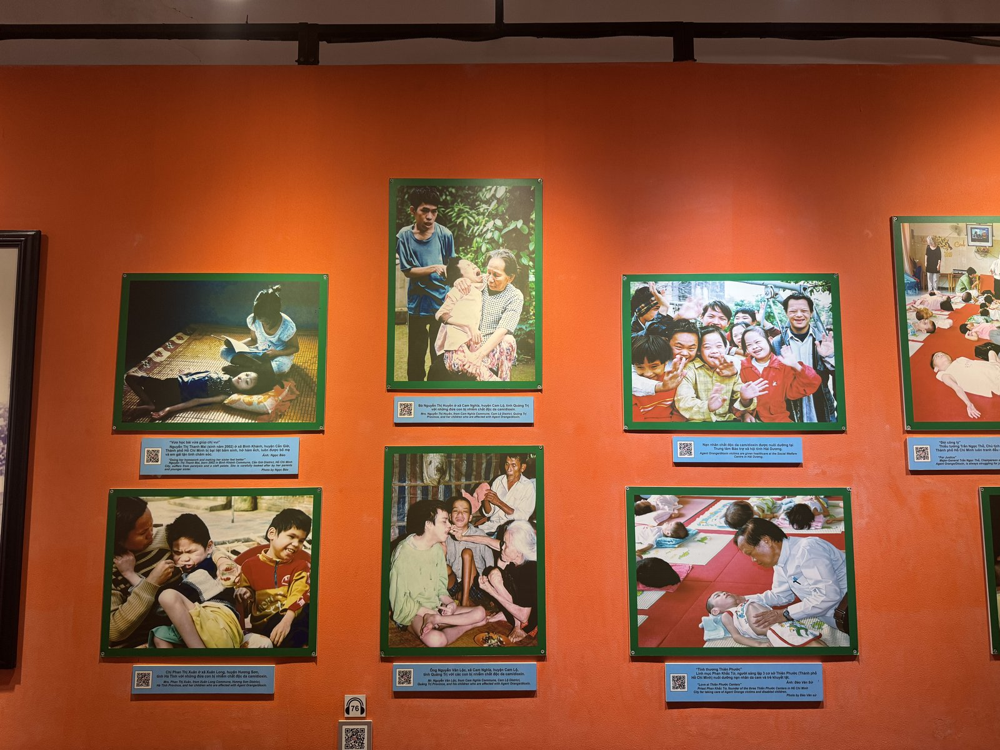

Chứng tích & Liên hệ Quốc tế
Lồng ghép tư liệu Bảo tàng Chứng tích Chiến tranh
Hình ảnh về hậu quả nặng nề sau chiến tranh & Nỗ lực tẩy độc Dioxin:
Không quân Mỹ đã ném xuống chiến trường Đông Dương 7,5 triệu tấn bom (gấp 3 lần tổng số bom Mỹ dùng trong Thế chiến II) và rải hàng chục triệu lít chất độc hóa học.
Hiện vật tháo gỡ bom mìn, tẩy độc môi trường tại sân bay Đà Nẵng, Biên Hòa và các trung tâm bảo trợ nạn nhân Da cam làm nổi bật khó khăn khách quan to lớn khi đất nước bước vào thời kỳ khôi phục và Đổi mới.


Mảng trưng bày về sự hồi sinh của đất nước, thông điệp hòa bình & Ngoại giao thời kỳ Đổi mới:
Từ hình ảnh Madame Nguyễn Thị Bình — biểu tượng ngoại giao kiệt xuất tiếp tục cống hiến cho công cuộc hòa bình, đến các tư liệu về bình thường hóa quan hệ Việt – Mỹ và nâng cấp Đối tác Chiến lược Toàn diện, bảo tàng minh chứng cho tinh thần khép lại quá khứ, hướng tới tương lai theo đường lối "Ngoại giao cây tre" của Đảng.


Góc nhìn & Liên hệ Quốc tế
Nghĩa vụ quốc tế tại Campuchia: Tinh thần quốc tế trong sáng của Đảng và Quân tình nguyện Việt Nam giúp nhân dân Campuchia đánh đổ chế độ diệt chủng Pôn Pốt (giải phóng Phnôm Pênh 7/1/1979), hồi sinh đất nước.
Chuyển dịch tư duy kinh tế: Từ mô hình kinh tế XHCN cứng nhắc (chỉ gồm 2 thành phần quốc doanh và tập thể) sang phát triển nền kinh tế nhiều thành phần, vận hành theo cơ chế thị trường định hướng XHCN và phá thế bao vây, cấm vận.
Ngoại giao cây tre (từ 2021): Việt Nam đã nâng cấp quan hệ Đối tác chiến lược toàn diện với tất cả 5 Ủy viên thường trực HĐBA LHQ, tạo cục diện đối ngoại rộng mở chưa từng có. Hoàn thành xuất sắc vai trò Ủy viên không thường trực HĐBA LHQ, Chủ tịch ASEAN, là điểm sáng thu hút đầu tư toàn cầu.